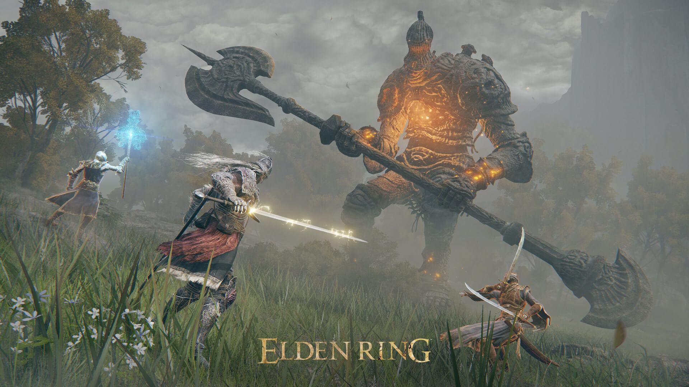
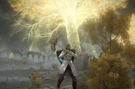
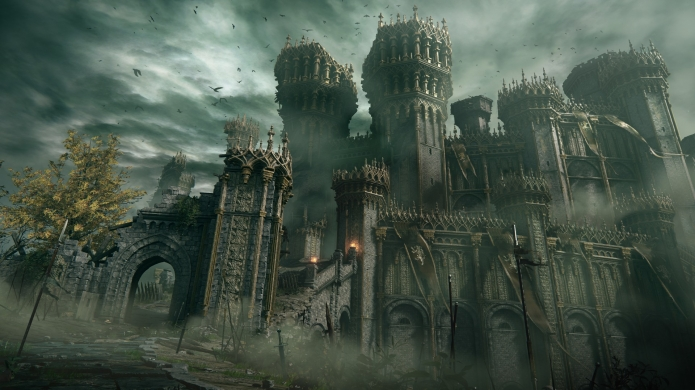

Game Title


Price
Release Date
Age Rating
The Golden Order has been broken. Rise, Tarnished, and be guided by grace
to brandish the power of the Elden Ring and become an Elden Lord in the
Lands Between.Journey through the Lands Between, a new fantasy world
created by Hidetaka Miyazaki, creator of the influential DARK SOULS video
game series, and George R. R. Martin, author of The New York Times
best-selling fantasy series, A Song of Ice and Fire. Unravel the mysteries
of the Elden Ring's power. Encounter adversaries with profound
backgrounds, characters with their own unique motivations for helping or
hindering your progress, and fearsome creatures.ELDEN RING features vast
fantastical landscapes and shadowy, complex dungeons that are connected
seamlessly. Traverse the breathtaking world on foot or on horseback, alone
or online with other players, and fully immerse yourself in the grassy
plains, suffocating swamps, spiraling mountains, foreboding castles and
other sites of grandeur on a scale never seen before in a FromSoftware.

Create your character in FromSoftware's refi ned action-RPG and defi ne
your playstyle by experimenting with a wide variety of weapons, magical
abilities, and skills found throughout the world. Charge into battle,
pick off enemies one-by-one using stealth, or even call upon allies for
aid. Many options are at your disposal as you decide how to approach
exploration and combat title.
